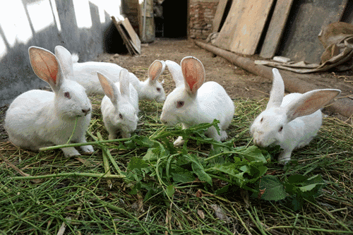
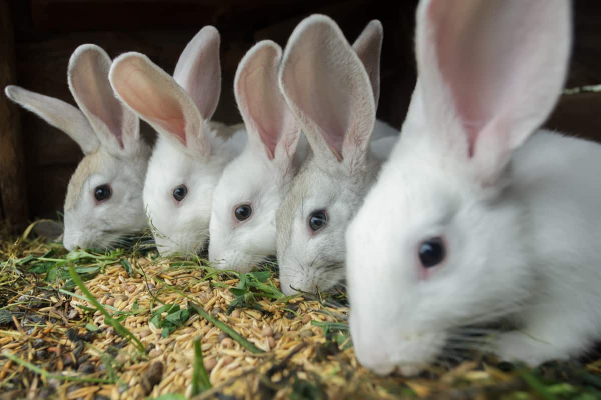

Antes de iniciar a criação, estude calmamente sobre as raças de coelhos existentes e defina em qual delas irá investir. Podem ser classificadas de acordo com sua função econômica, cor, porte e tamanho do pelo. Nota-se uma tendência a criar raças de porte médio e grande, visando a uma maior produção de carne e pele de bom tamanho. Você poderá optar por:
O coelho é um animal muito prolífero (vários descendentes em curto período de tempo), seu ciclo produtivo é curto, podendo, portanto ser explorado comercialmente.
Na fase de reprodução, os coelhos estão prontos por volta de 6 meses de idade. Podemos utilizar vários métodos de acasalamento, sendo o mais indicado (maior controle de índices zootécnicos) o acasalamento natural controlado, o qual levamos a fêmea à gaiola do macho e deixamos os mesmos se acasalarem naturalmente, isso permite um controle da criação e identificação dos eventuais machos/fêmeas com problemas reprodutivos.
Em relação a alimentação dos animais, quando criados mais em regimes extensivos (acesso a pequenos piquetes) devemos fornecer algumas gramíneas ou leguminosas (soja, alfafa...), complementando a alimentação com a utilização de rações balanceadas disponíveis no mercado. Quando a criação for intensiva, não há problema de fornecimento apenas de ração.
Os cuidados sanitários são simples, devemos manter constantemente higienizadas as gaiolas (recomendado o uso de cal virgem) e preceder a separação dos animais por idade (animais jovens são mais suscetíveis as doenças) evitando assim a contaminação pela diferença de idade dos animais.
Os animais podem ser criados em gaiolas (dimensões de 80 cm de comprimento, 60 cm de largura e 45 cm de altura) individuais ou em baterias, dependendo do investimento do criador. Para proporcionar o bem-estar dos animais a temperatura do local deve ficar em torno de 20º C e umidade em torno de 70%. Cuidados para não estressar os animais (barulho, super lotação, etc..) devem ser tomados, visando uma maior produção.
A atividade tem custo relativamente baixo, pois utiliza pouco espaço e instalações rústicas. É importante garantir, no entanto, um ambiente arejado e bem iluminado para a criação. O ideal é que o ambiente tenha temperatura na faixa 15 aos 25 graus, embora eles suportem até 30 graus. A correntes de vento sobre o criatório devem ser quebradas.
As gaiolas devem ser de arame galvanizado e tamanho suficiente para abrigar uma fêmea, o ninho e os filhotes. Esse mesmo tamanho pode ser utilizado para a engorda de até seis coelhos.
Os ninhos mais recomendados são os fechados e feitos de chapa galvanizada por terem maior durabilidade, facilitarem a limpeza e desinfecção.
o coelheiro deve ser longe de áreas movimentadas e de outras criações, para evitar transmissão de doenças. Além disto, os coelhos não gostam de muito barulho, pois ficam agitados e estressados. O excesso de ruído pode provocar transtornos circulatórios, respiratórios e digestivos aos coelhos.